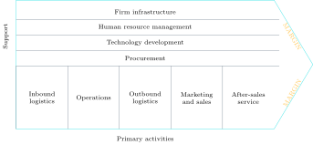

Model
Strategic groups (raggruppamenti strategici)
Strategic mapping represents graphically the competitors of an industry in homogeneous groups, based on aggregation variables. Possible dimensions: production specialization, degree of vertical integration, cost structure and level, product quality, brand identification, distribution channels, range breadth, geographic extension. Choose variables expressing mobility barriers (brand, sales networks) and reflecting different strategic actions; often draw several maps.
US airline case: nine main firms (American, United, Delta, America West, Southwest, TWA, NWA, USAir, Continental); variables cost per ASM (available seat-mile: easy to compute, similar cost structures; costs are inversely proportional to average flight distance) and quality AQR (Airline Quality Rating, National Institute for Aviation Research, Wichita State University).
| Group | Members | Position |
|---|---|---|
| Differentiation | American, United, Delta | high quality |
| Cost leadership | America West | low cost, low quality |
| Focus | Southwest | quality niche, low cost |
| Stuck in the middle | TWA, NWA, USAir, Continental | low quality, high cost |
The value chain
Built for a single strategic business unit (SBU), interpreted inside the wider value system: value chains of suppliers → the SBU → channels → customers.
Value = total revenue = price × units sold, i.e. what buyers are willing to pay.| Primary activity | Content |
|---|---|
| Inbound logistics | receiving, storage, handling, warehouse, stock |
| control, vehicle scheduling, returns to suppliers | |
| Operations | machining, assembly, packaging, maintenance |
| Outbound logistics | finished-goods storage, delivery vehicles, order |
| scheduling and processing | |
| Marketing and sales | advertising, sales force, offers, channel choice, |
| pricing policy | |
| After-sales service | installation, testing, training, spare parts, |
| assistance |
| Support activity | Content |
|---|---|
| Procurement | procedure for buying materials, supplies, assets |
| Technology development | know-how, procedures, technological input |
| Human resources | selection, hiring, evaluation, careers, unions |
| Firm infrastructure | general management, planning, finance, |
| accounting, legal, quality control |
Primary activities create the product physically, transfer it to the buyer and assist after sale — tied to the operating process. Support activities sustain primary ones and also generate value. Analysing each activity's contribution is a disaggregation process: e.g. marketing and sales split into advertising, sales-force management, pricing, promotion, channels.
Worked example
Coca-Cola's global differentiation is supported by: logistics and production → economies of scale; marketing and sales → iconic brand; R&D (technology development) → new products; procurement → purchasing power. IKEA's cost leadership lives in outbound logistics (customer self-transport) and operations (flat-pack design).
Pitfall
The value chain belongs to one business unit, not to a whole group. Support activities are not "overhead without value". Margin is value minus all activity costs.
Recall
Draw the value chain from memory with five primary and four support activities; draw the airline strategic map and name its four groups.
Picture

Every activity adds cost; the margin exists only if buyers value the whole chain above that cost.